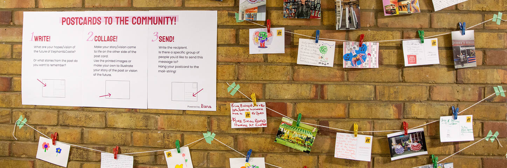
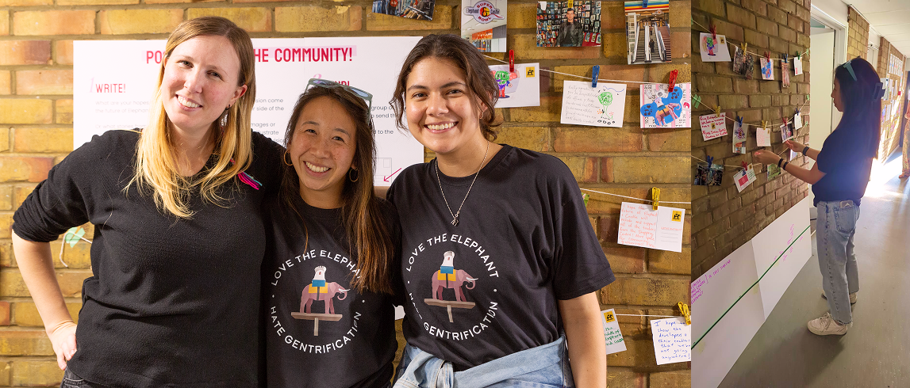

What memories endure in Elephant and Castle, and what visions of justice and belonging shape its future?

Postcards to the Community — part of Latin Elephant's 10th anniversary celebration — provided a valuable platform for local residents to express their reflections on the past and their hopes for the future of Elephant and Castle.

This workshop was organised by the collective Liana, which Chiara co-founded to support creative and community-led approaches to urban change. As part of the Liana team, Chiara helped facilitate the session and design the process.
The use of postcards as a medium for reflection and expression proved particularly effective. The intimate setting of the small workshop space fostered meaningful conversations between participants and the Liana team.